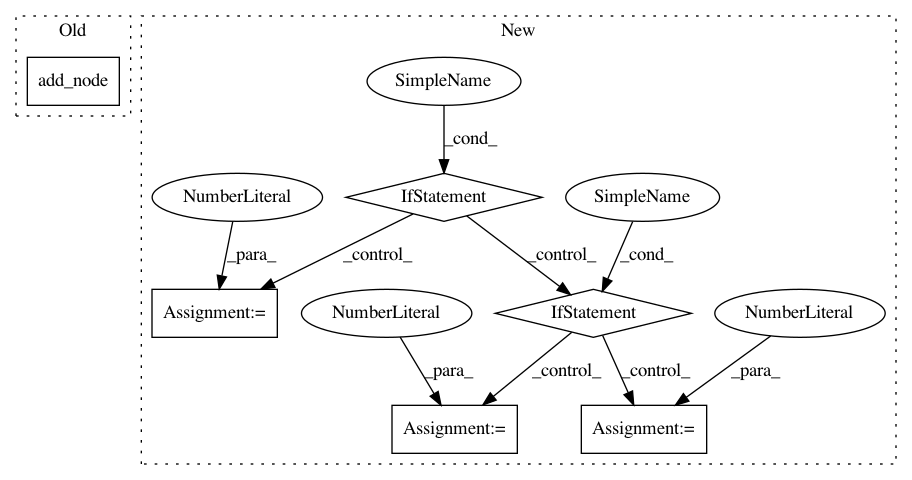

c49a22d32f6479f750bfc7025c9838bc499b2a5a,onnxmltools/convert/common/_apply_operation.py,,apply_prelu,#Any#Any#Any#Any#Any#Any#,364
Before Change
container.add_node("PRelu", [input_name, slope_tensor_name], output_name, op_version=1, name=name,
consumed_inputs=[0, 0])
elif container.target_opset < 7:
container.add_node("PRelu", [input_name, slope_tensor_name], output_name, op_version=6, name=name)
else:
container.add_node("PRelu", [input_name, slope_tensor_name], output_name, op_version=7, name=name)
After Change
container.add_node("PRelu", [input_name, slope_tensor_name], output_name, op_version=1, name=name,
consumed_inputs=[0, 0])
else:
if container.target_opset < 7:
op_version = 6
elif container.target_opset < 9:
op_version = 7
else:
// opset 9 supports unidirectional broadcasting
op_version = 9
container.add_node("PRelu", [input_name, slope_tensor_name], output_name, op_version=op_version, name=name)
def apply_elu(scope, input_name, output_name, container, operator_name=None, alpha=1.0):
_apply_unary_operation(scope, "Elu", input_name, output_name, container, operator_name, alpha=alpha)
In pattern: SUPERPATTERN
Frequency: 3
Non-data size: 6
Instances
Project Name: onnx/onnxmltools
Commit Name: c49a22d32f6479f750bfc7025c9838bc499b2a5a
Time: 2019-02-15
Author: vinitras@gmail.com
File Name: onnxmltools/convert/common/_apply_operation.py
Class Name:
Method Name: apply_prelu
Project Name: deepmipt/DeepPavlov
Commit Name: 6d3e4bdc22cc89fb7ecf188ccf0479632012026f
Time: 2018-04-18
Author: dilyara.rimovna@gmail.com
File Name: deeppavlov/models/evolution/check_binary_mask.py
Class Name:
Method Name: get_graph_and_plot
Project Name: deepmipt/DeepPavlov
Commit Name: 4fca544205a55010e8959bb760aece5be80dc3a5
Time: 2018-06-26
Author: dilyara.rimovna@gmail.com
File Name: deeppavlov/models/evolution/check_binary_mask.py
Class Name:
Method Name: get_graph_and_plot